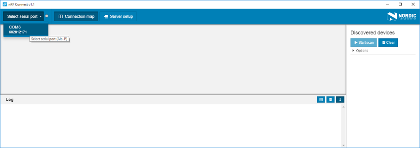
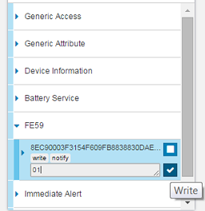

OTA-DFU with nRF Connect¶
You can run a device firmware update (DFU) using Nordic Semiconductor’s nRF Connect for Desktop application.
Updating with nRF Connect for Desktop¶
The following procedure involves using a desktop device and a connectivity board to run DFU.
Install the following software on your computer before running this procedure:
You also need either an nRF51 DK or an nRF52 DK that will function as a connectivity board during DFU.
Connect a development kit to your computer through the USB port. This DK will serve as an intermediate connectivity board.
Run nRF Connect for Desktop. From the list of ports, choose the serial port where the connectivity board is connected.
Select the board in nRF Connect¶
Click Start Scan and locate your device in the list of discovered devices. Make sure the device is not bonded to another host.
Note
The list of discovered devices is not automatically refreshed when they stop advertising. Whenever you have problems connecting to a device from the list, try clearing it and rerunning the scan.
Connect to your device. When connecting, you do not need to select any of the optional settings.
Expand the FE59 service section and enable notifications by clicking Toggle notifications. Then, type
01into the FE59 field. Press Enter or click Write.FE59 service section¶
The device now enters DFU mode. You are disconnected from the device and, if you run a new scan, your device appears as new device with “Dfu” added to the device name.
Close nRF Connect. Make sure that nRF Connect and nRF Util applications do not run at the same time.
With nRF Util installed, open the command prompt and run the following command, where
<ic_name>is the series of the connectivity board (NRF51 or NRF52) and<package_name.zip>is the path to the zip file that is to be transferred to the device:nrfutil dfu ble -ic <ic_series> -pkg <package_name.zip>
For example:
nrfutil dfu ble -ic NRF51 -pkg "new_firmware.zip"
You might be prompted to select the connectivity serial port. Select the port that the connectivity board is connected to and press Enter. A progress bar will appear showing the progress of the package transfer.